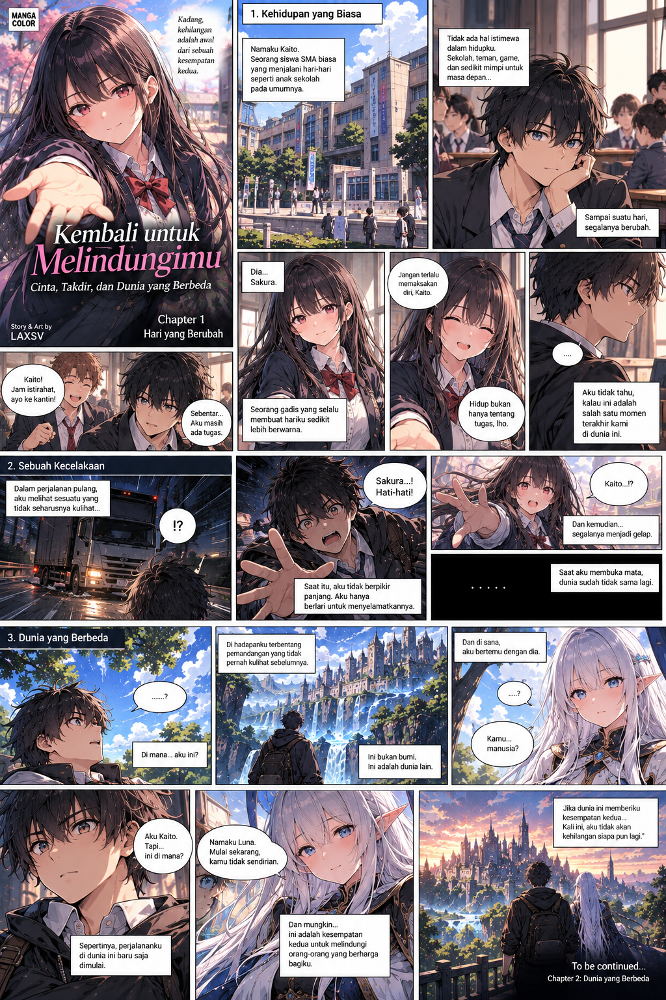

MANGA ORIGINAL • ROMANCE • FANTASY
Kembali untuk Melindungimu
Kaito mendapatkan kesempatan kedua setelah sebuah kecelakaan mengubah hidupnya. Di dunia lain, ia bertemu Luna dan mulai menemukan alasan untuk hidup kembali.
Daftar Chapter
Chapter 1 — Hari yang Berubah
Awal perjalanan Kaito
Awal perjalanan Kaito
Chapter 2 — Dunia yang Berbeda
Segera hadir
Segera hadir
Chapter 3 — Pertemuan Kembali
Segera hadir
Segera hadir